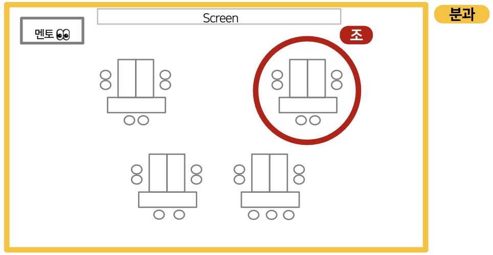

← 뒤로가기
👨🏫 멘토 생활 백서
신입구성원과정 기간 중 멘토 생활 가이드
🏠
숙소 지원 안내
🛏️
멘토 숙소 제공
신입구성원과 동일한 건물 내 숙소를 제공하며,
1인 1실
로 제공됩니다
(신입구성원은 숙소 수용 인원에 맞춰 '2인 1실 or 3인 1실' 사용 예정)
📅
주말 숙박 정책
주말 숙박은 불가합니다
주말 동안 연수원 내 짐 보관 장소에 짐 거치 가능
💡 멘토의 경우, 일요일 18시 이후 사전 입소 가능
(단, 일요일에는 식당/편의점 등 이용 불가)
🤝
운영진과의 미팅
⏰
일일 미팅 시간
매일 저녁식사 전 30분간 운영진과의 미팅 시간이 있습니다
🕕 시간: 18:00~18:30 (매일)
📋 내용: 당일 특이사항 공유 + 다음날 일정 안내
🚌
교통 및 이동 안내
📍
버스 승하차 장소
연수원 정보를 불러오는 중...
💡 연수원 정보는 초기 설정에서 가져옵니다. 변경이 필요하면
설정 페이지
에서 다시 선택해주세요.
🚗
개인 차량 이용
개인 차량(부모, 지인 차량 포함)을 통한 개별 이동은 불가합니다 (멘토는 제외)
신입구성원 참가자는 모두 정해진 셔틀버스로만 이동 가능
💻
mySUNI 커뮤니티 활용
👨🏫
멘토과정 커뮤니티
'멘토+운영진'이 활용하는 커뮤니티
출결 현황판, 멘토 진행 장표 등 멘토에게 필요한 정보 중심으로 구성
👥
신입구성원과정 커뮤니티
'신입구성원'이 활용하는 커뮤니티
신입구성원과정 주요 공지사항 및 멘티들의 교육 내용 파악 가능
📋
멘토 주요 역할
📊
출결 현황 관리
담당 분과의 Daily 출결 현황(오전/오후)을 파악하여 '신입구성원 출결 현황판'에 기입
💡 Tip: 1일차에 선정될 조장이 조원들의 출결을 확인하도록 하시면 좋습니다
🎯
프로그램 진행 지원
각 일자별 과목, 강의장 위치, 시간표 등 주요 학습 내용에 대해 안내
신입구성원이 원활히 교육과정에 참여하고 몰입할 수 있도록 지원
⚠️
특이사항 보고
담당 분과 구성원 관련 이슈 or 특이사항 발생 시 운영진에게 공유
신입구성원이 교육 과정 기간 동안 규율에 따라 행동할 수 있도록 가이드
🏫
분과장 운영 가이드
📐
분과장은 멘토가 책임지는 공간입니다! 😊
자유롭게 활용하되, 하단 Layout이 기본 세팅으로 유지될 수 있도록 관리해주세요
📐 기본 Layout 예시

📐 분과장 레이아웃 이미지
이미지를 불러올 수 없습니다
💡 분과형식 테이블 세팅 (총 25석) - Screen 좌측에 멘토석, 분과 내 조 편성은 멘토 자율
👥
그룹 명칭 통일
혼선 방지를 위해 그룹 명칭을 통일해주세요
📝 멘토 담당 그룹:
'분과'
/ 분과 내 소그룹:
'조'
🎯
분과장 선정
분과를 대표하여 멘토를 도와줄 분과장(조장❌)을 선정하여
'신입구성원과정 분과현황판'
에 기입해주세요!
💡
멘토 생활 Tip
• 분과 내 조 편성은 멘토 자율적으로 진행 가능
• 중요한 안내사항이 있는 Daily Closing, 팀 프로젝트 OT 시간에는 멘토도 참가하여 내용 숙지
• 멘토과정에서 학습한 캔미팅 가이드, FT Skill을 적극 활용해보세요